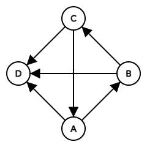
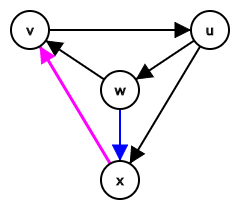

有一张 $n$ 个顶点的竞赛图 (有向单向完全图) $G \left( V, E \right)$，满足如下性质：
对于任意四点 $v_1, v_2, v_3, v_4$，它们在 $G$ 中导出的子图不同构于下图：
对于 $u, v \in G$ ($u \neq v$)，定义 $dis \left( u, v \right)$ 为 $u$ 到 $v$ 的最短路，如果不存在是 $u$ 到 $v$ 的有向路径，则定义 $dis \left( u, v \right) = 614 n$。这样，对所有的 $u, v \in G$ ($u \neq v$)，$dis \left( u, v \right)$ 均有定义。
现在，你需要求出 $\displaystyle \sum_{u, v \in G, u \neq v} dis \left( u, v \right)$ 的值。
第一行包含一个正整数 $n$ ($4 \leq n \leq 8000; 4 \mid n$)，表示图 $G$ 的点数。
接下来 $n$ 行描述 $G$ 的邻接矩阵。为了减少输入量，采用如下方式进行输入：
$n$ 行中的第 $i$ ($1 \leq i \leq n$) 行为一个长度为 $\dfrac n4$ 的 $16$ 进制串 (可以包含前导 $0$)，将这个 $16$ 进制串看成一个 $16$ 进制数，那么将其转成 $n$ 位二进制数 (可以包含前导 $0$)后，从高位起第 $j$ 位 ($1 \leq j \leq n$，记作 $G_{i, j}$) 表示是否存在 $i \to j$ 这条有向边。
保证 $G_{i, i} = 0, G_{i, j} + G_{j, i} = 1$ ($i \neq j$)，且满足题目描述中的限制。
输出一行一个整数，表示 $\displaystyle \sum_{u, v \in G, u \neq v} dis \left( u, v \right)$ 的值。
md 又是比赛结束后 1min 内想到正解但来不及码 /kel
仍然还是注意到图是竞赛图，因此它缩点后得到的图一定是一条有向链 (可以参考 [uoj181]密码锁)。
接下来，如何利用这个 "导出子图不同构" 的条件呢？首先，在竞赛图中，有一个著名的结论：
如果一个 $n$ 阶竞赛图 $G$ 是强连通的，则对于 $\forall 3 \leq k \leq n$，$G$ 中存在大小为 $k$ 的圈。
先证明 $G$ 中存在 Hamilton 圈 (即长度为 $n$ 的圈)。
对 $n$ 使用数学归纳法。
任取 $v \in G$，如果 $G \setminus \left\{ v \right\}$ 强连通，则 $G \setminus \left\{ v \right\}$ 存在长为 $n - 1$ 的圈。
于是将 $v$ "插入" 即可。由强连通性知一定可以插入。
反之，若 $G \setminus \left\{ v \right\}$ 非强连通，则设它缩点后得到的若干个强连通分量按拓扑序为 $S_1, S_2, \cdots, S_k$。
由归纳假设，每个 $S_i$ 都有 Hamilton 圈，由强连通性，$S_k$ 中存在点 $a$ 连向 $v$，$S_1$ 存在点 $b$ 被 $v$ 指向。
容易构造 $G \setminus \left\{ v \right\}$ 中从 $b$ 到 $a$ 的 Hamilton 路径，从而 $b \leadsto a \to v \to b$ 记为所求。
接下来证明，$n$ ($n \geq 4$) 阶竞赛图存在长度为 $n - 1$ 的 Hamilton 圈。
类似地，任取 $v \in G$，将 $v$ 删去，若 $G \setminus \left\{ v \right\}$ 强连通，则命题已经成立。
反之，设拓扑序为 $S_1, S_2, \cdots, S_k$，则要么 $k \geq 3$，要么存在 $\left| S_i \right| \geq 2$。两种情况均容易构造出长度为 $n - 1$ 的 Hamilton 圈。
结合反向数学归纳法，知原结论成立。
这个命题可以导出一个重要的结论：
设原竞赛图缩点后的拓扑序为 $S_1, S_2, \cdots, S_k$，那么除了 $S_k$ 外，其余连通分量的大小一定为 $1$。
反之，设 $\left| S_i \right| > 1$，则 $\left| S_i \right| \geq 3$。
由上述结论知 $S_i$ 存在大小为 $3$ 的圈，设为 $a \to b \to c \to a$。
任取 $S_k$ 中一点 $d$，由拓扑序的性质知存在边 $a \to d, b \to d, c \to d$，从而与题目条件矛盾。
接下来考虑如何求原式。
若两个点 $u, v$ 中至少有一个点不在 $S_k$，由于前面连通分量的大小都为 $1$，因此这两个点一定在不同的连通分量，从而其中一对距离为 $1$，另一对距离为 $+ \infty$ (到题目中就是 $614 n$)。
于是这部分的贡献总和就等于 $\dfrac 12 \left( n - \left| S_k \right| \right) \left( n + \left| S_k \right| - 1 \right) \left( 1 + 614 n \right)$。
接下来只需考虑 $G$ 强连通的情况。首先，不难得到
强连通竞赛图中任意两点的距离不超过 $3$。
设 $G$ 是强连通竞赛图，$u, v \in G$，$\operatorname{dist} \left( u, v \right) > 2$，我们证明 $\operatorname{dist} \left( u, v \right) = 3$。
设 $v$ 指向的点的集合 (出邻域) 为 $N^+ \left( v \right)$，被指向的点的集合 (入邻域) 为 $N^- \left( v \right)$。
由于 $\operatorname{dist} \left( u, v \right) > 2$，说明存在边 $v \to u$，且 $N^+ \left( u \right) \cap N^- \left( v \right)= \varnothing$。
令 $A = \left\{ u \right\} \cup N^+ \left( u \right), B = \left\{ v \right\} \cup N^- \left( u \right)$。
由强连通图的性质，至少存在 $A$ 中一点 $a$ 和 $B$ 中一点 $b$，使得存在边 $a \to b$，且由定义，$a \neq u, b \neq v$。
于是 $u \to a \to b \to v$ 记为所求的长度为 $3$ 的路径。
(ps: 以下内容为 2019.5.16 更新)
感谢 @Isonan-cn 的提醒，上述结论对于一般的强连通竞赛图不一定成立，但是对满足题目条件的竞赛图来说，仍然成立，即：
对于满足题目条件的强连通竞赛图，任意两点的距离不超过 $3$。
证明设 $G$ 是强连通竞赛图。反设 $\exists u, v \in G, \operatorname{dist} \left( u, v \right) > 3$，我们尝试导出矛盾。
设 $\operatorname{dist} \left( u, v \right) = k$ ($k \geq 4$)，$u$ 到 $v$ 的一条最短路为 $u \to p_{k-1} \to p_{k-2} \to \cdots \to p_2 \to p_1 \to v$，且存在边 $v \to u$。
由于这是一条最短路，故存在边 $v \to p_2$ (否则 $u \to p_{k-1} \to \cdots \to p_2 \to v$ 是更短的路)。
同理，存在边 $p_1 \to u$ 和 $p_2 \to u$，否则也会得到更短的路。
于是，四点组 $\left( p_2, p_1, v; u \right)$ 与题目条件矛盾。故假设不成立。
于是接下来我们的任务就是判断有多少对点对的距离为 $2$，多少对点对的距离为 $3$。设距离为 $d$ 的点对数量为 $K_d$，则这部分对答案的贡献总和就是 $K_1 + 2 K_2 + 3 K_3$。
首先，在这 $m = \left| S_k \right|$ 个点中，不难得到有恰好 $\dbinom m2$ 个 (有序) 点对的距离为 $1$，即 $K_1 = \dbinom m2$。结合 $K_1 + K_2 + K_3 = m \left( m - 1 \right)$ 知 $K_2 + K_3 = \dbinom m2$。
考虑 $\operatorname{dist} \left( u, v \right) = 2$ 的充要条件，即存在边 $v \to u$，但 $N^+ \left( u \right) \cap N^- \left( v \right) \neq \varnothing$。
但是暴力判断的复杂度为 $O \left( n^3 \right)$ 或 $O \left( \dfrac {n^3} \omega \right)$，排序判断的复杂度为 $O \left( n^2 \log n \right)$，在 $n = 8000$ 的数据规模面前均无法接受。
这引导我们继续分析题目的性质。
考虑 $w \in N^+ \left( u \right) \cap N^- \left( v \right)$，观察我们能得到什么性质。
设 $x$ 是 $N^+ \left( u \right)$ 中的另一点 (即 $u \to x$)，若存在边 $w \to x$，则一定有 $x \to v$，即 $x \in N^+ \left( u \right) \cap N^- \left( v \right)$，如下图：
(事实上，注意到如果 $v \to x$ 的话 $\left( v, u, w; x \right)$ 四点组会与题目条件矛盾)
这样一来，考察 $N^+ \left( u \right)$ 中的所有点 $\left\{ w_1, w_2, \cdots, w_k \right\}$，考虑导出子图 $G \left[ N^+ \left( u \right) \right]$ 是否强连通，我们总能取拓扑序最靠后的那个点 $F$ (即最后一个 SCC 中的任一点)，于是，$N^+ \left( u \right)$ 中任意一点都可以仅通过它们之间的连边到达 $F$。进而只要 $N^+ \left( u \right)$ 存在满足条件的 $w$，这个 $F$ 一定满足。
于是，我们就将 $O \left( n \right)$ 的判断量 (判断两个集合是否交非空) 转化为了 $O \left( 1 \right)$ 的判断量 (判断某个特定元素是否在集合中)。
注意到这个 $F$ 点只和 $u$ 有关，和 $v$ 无关，因此可以在 $O \left( n^2 \right)$ 时间内得到所有点的 "$F$ 点"。
那么整个问题就可以在 $O \left( n^2 \right)$ 内成功解决啦。
#include <bits/stdc++.h>
#define for_bitset(variable, bitset) for (variable = bitset._Find_first(); variable != N; variable = bitset._Find_next(variable))
using std::cin;
using std::cout;
typedef long long ll;
const int N = 8000;
typedef std::bitset <N> bitset;
int n, inf;
int trs[255];
bitset Gi[N], Go[N];
char s[N];
int pre[N];
int cnt = 0, id[N], low[N];
int stc = 0, sta[N];
int scc = 0, bel[N], size[N];
bool instack[N];
inline void down(int &x, const int y) {x > y ? x = y : 0;}
void dfs(int x) {
int y;
id[x] = low[x] = cnt++, instack[x] = true, sta[stc++] = x;
for_bitset (y, Go[x])
if (!~id[y])
dfs(y), down(low[x], low[y]);
else if (instack[y])
down(low[x], id[y]);
if (id[x] == low[x]) {
for (y = -1; y != x; )
y = sta[--stc], instack[y] = false, bel[y] = scc, ++size[scc];
++scc;
}
}
int main() {
int i, j, c, d, K1, K2, K3; ll ans = 0;
std::ios::sync_with_stdio(false), cin.tie(NULL);
std::iota(trs + 48, trs + 58, 0), std::iota(trs + 65, trs + 71, 10);
cin >> n, inf = 614 * n;
for (i = 0; i < n; ++i)
for (cin >> s, j = c = 0; c < n / 4; ++c, j += 4)
d = trs[(int)s[c]],
Go[i].set(j + 0, d & 8), Gi[j + 0].set(i, d & 8),
Go[i].set(j + 1, d & 4), Gi[j + 1].set(i, d & 4),
Go[i].set(j + 2, d & 2), Gi[j + 2].set(i, d & 2),
Go[i].set(j + 3, d & 1), Gi[j + 3].set(i, d & 1);
memset(id, -1, n << 2);
for (i = 0; i < n; ++i) if (!~id[i]) dfs(i);
assert(scc), assert(std::count(size + 1, size + scc, 1) == scc - 1);
ans += (n - *size) * (n + *size - 1ll) / 2 * (1 + inf);
for (i = 0; i < n; ++i) if (bel[i])
for (Go[i].reset(), j = 0; j < n; ++j) Gi[j].reset(i);
for (i = 0; i < n; ++i) if (!bel[i]) {
int &p = pre[i]; p = -1;
for_bitset (j, Go[i]) (~p && Gi[p].test(j)) || (p = j);
}
for (K2 = i = 0; i < n; ++i) if (!bel[i])
for (j = 0; j < n; ++j) if (!bel[j])
K2 += Gi[i].test(j) && ~pre[i] && Go[ pre[i] ].test(j);
K1 = *size * (*size - 1) / 2, K3 = K1 - K2;
printf("%lld\n", ans + K1 + K2 * 2 + K3 * 3);
return 0;
}
坑1：存储边时可以使用 std::bitset 以减少常数及空间。
坑2：注意题目 $614 n$ 中的 $n$ 不要忘记，以及答案会超过 int，需要使用 long long。